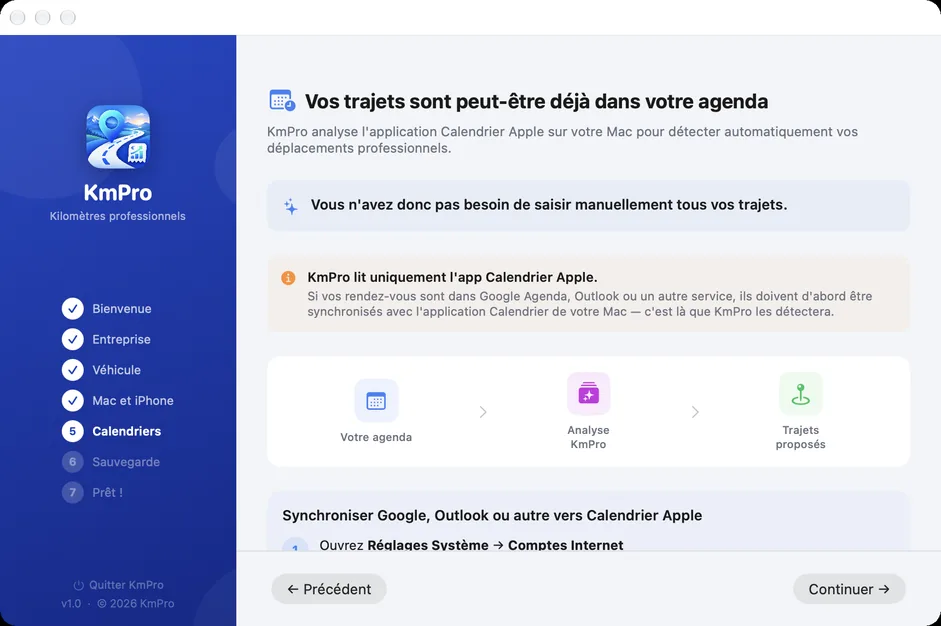

Cabinets comptables
Comptables : proposez KmPro à vos clients
Chaque année, la même scène : un client arrive avec un agenda, des souvenirs et un ordre de grandeur. Il faut reconstituer ses déplacements, vérifier les distances, appliquer le bon barème — et le résultat reste fragile en cas de contrôle.
Ce que vous recevez ensuite
Un client équipé de KmPro vous remet un document déjà construit :
- un fichier Excel avec un onglet par mois, un récapitulatif annuel et de vraies formules, modifiables ;
- ou un PDF prêt à archiver et à joindre au dossier ;
- pour chaque ligne : date, trajet, client ou projet, motif, distance et montant ;
- des montants calculés au barème de l’année, selon la puissance fiscale et la tranche de kilométrage du véhicule.
Vous n’avez plus à recalculer : vous vérifiez et vous intégrez.

Pourquoi le justificatif tient
Les trajets sont enregistrés au fil de l’année, pas reconstitués en mars. Les distances sont calculées par l’application, et chaque déplacement porte son motif professionnel. C’est la différence entre un total estimé et un historique daté, ligne par ligne.
Les clients à qui en parler
Ce sont ceux qui vous coûtent le plus de relances : indépendants qui roulent beaucoup, professions de santé à domicile, commerciaux, artisans, et les salariés de vos clients qui avancent leurs kilomètres. Plus le nombre de déplacements est élevé, plus le gain est net — pour eux comme pour vous.

Ce qu’ils doivent savoir
- L’application fonctionne sur iPhone et Mac, avec un seul abonnement annuel.
- Elle peut retrouver les déplacements déjà présents dans leur calendrier et remplir un mois, ou une année, d’un coup.
- Les exports restent accessibles même sans abonnement actif : leurs pièces comptables ne dépendent pas d’un renouvellement.
- Les données restent dans leur espace iCloud privé ; l’éditeur ne collecte aucune donnée.
Une question, un besoin particulier ?
Si vous accompagnez plusieurs clients concernés, ou si le format d’export doit s’adapter à vos habitudes de saisie, écrivez-moi : contact@kmpro.app. Les retours de cabinets sont précieux — l’export a déjà été façonné par ce genre de remarques.
Voir KmPro sur l’App StoreKmPro est édité par LUCAS STANUS VIDEOS. Les informations fiscales présentées sur ce site le sont à titre indicatif et ne constituent pas un conseil professionnel.
À lire aussi
- Trouver le barème fiscal de sa voiture : la puissance fiscale
- Barème kilométrique 2025 : le tableau à appliquer
- Barème kilométrique 2026 : tableau officiel et simulateur
- Calculer ses frais kilométriques en France : méthode et exemples
- Carnet de bord kilométrique : le tenir sans le remplir à la main
- Application de frais kilométriques pour Mac
- Déclarer ses frais kilométriques avec son véhicule personnel
- Indemnités kilométriques 2026 : ce qui change
- Modèle Excel de frais kilométriques : ce qu’il doit contenir
- Note de frais kilométrique : ce qu’elle doit contenir